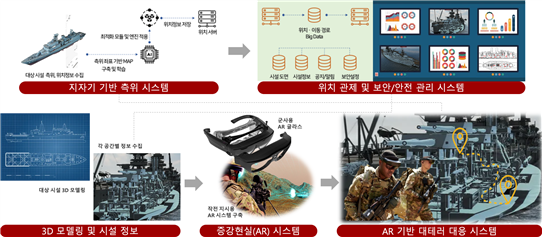

미래도전국방기술 연구 개발
2022.11.25 ~ 2025.10.31

1. 연구 목표
◦ 초정밀 지구 자기장 기반 실내 측위 기술 확보
◦ 실시간 디지털 트윈 서비스 구축
◦ 위치 기반의 보안 및 안전 관리 서비스 구축
◦ AR 기반 대테러 작전 수행 시스템 구축
2. 연구 필요성
- 해군 함정 인력의 실시간 관제에 필요한 높은 초기 비용과 부정확성 :
실시간 관제를 위해 기존의 전파기반 측위기술을 사용하는 경우 AP, 비콘 등과 같은 전파 신호 발생 장비가 추가적으로 필요하며, 이를 설치하기 위한 전기 공사에 많은 비용과 시간이 소요되고 또 추가된 장치의 유지보수 비용이 요구된다. 또한, 전파의 신호의 잡음, 간섭, 반사, 회절 등의 문제와 기존 지문인식 기반의 측위 알고리즘의 한계로 측위 오차는 약 5 ~ 20 미터 수준으로 정확성이 많이 떨어져 실제로는 비용 대비 효과는 떨어져서 아직까지 실제 사용은 거의 미미한 형편이다. UWB 장비를 사용하는 경우에는 측위 성능이 약 1 미터 내외로 우수한 편이지만, 고가의 장비를 필요로 하고 AP, 비콘과 마찬가지로 전기 공사를 필요로 하기 때문에 막대한 비용과 인력, 시간을 필요로 하는 단점을 가진다. 또한, 유동 인구가 많아지거나 장애물이 생기는 등의 작은 환경 변화에도 측위 성능이 급격히 감소한다는 단점이 있고, 이러한 환경 변화 마다 매번 시스템을 최적화하여야 하기 때문에 유지 보수 비용도 커지는 문제점이 있다. 연구팀은 스마트폰만을 사용하여 추가적인 장비 없이 실내에서 1 미터 내외의 측위 성능을 갖는 세계 최고 수준의 실내측위 기술을 독자적으로 개발하였다. 따라서 기존 기술 대비 경제성과 측위 성능을 혁신적으로 개선함으로써 해군 함정뿐만 아니라 국방부 본청, 작전사령부 등 국방 주요 시설은 물론, 군 내 교도소, 군 병영 막사 등 다양한 실내 환경에서 훨씬 경제적이고 정확한 위치 기반 서비스 구축을 가능하게 하였다.
함정 내 화재, 낙상 등 안전사고 대비 문제 :
사고, 화재, 재난 등 비상 상황 발생 시 신속하게 대처하기 위해서도 실내 위치 정보를 이용할 수 있다. 낙상 사고, 총기 사고 등 사고 감지 시 사고 위치, 요구조자의 정보 등을 관리자에 전송을 통해 사고 대비 시스템을 구축할 수 있으며 화재·비상·재난 상황 발생 시 임무별 이동 경로 및 대피 경로 안내를 신속하게 제공할 수 있다.
함정 내 감염병 확산 방지 및 모니터링 문제 :
함정 내 출입 인원 중 코로나 등 감염 환자가 발생한 경우, 현재는 질병 감독관의 관찰과 인터뷰에 의지하는 등 매뉴얼적인 기록에 의존하고 있다. 하지만 이번에 구축하는 실내 측위 시스템을 통해 감염 환자는 물론 함정 내 모든 이동 인원들에 대하여 측위 정보를 데이터베이스에서 관리함으로써 개인 간 근거리 접촉 정보를 기반으로 전염병 전파 경로를 실시간으로 자동 추적, 분석하여 위험 지역과 감염 위험 대상자, 전파자 등을 식별하기 위한 정보를 제공할 수 있다.
함정 내 해군 전력의 우울증, 자살, 성범죄 등 사회 문제 :
군 인권을 침해하는 가혹행위, 성폭행, 또 우울증으로 인한 자살, 탈영, 병영 부조리 등은 사건이 발생해도 군 특성상 피해자가 쉽게 가해자를 신고하지 못하기 때문에 군 인권 침해 및 사회문제는 예방이 어렵다. 신고가 접 수 되어도 심문을 통해 모든 가해자를 특정하기 힘들며, 사건 경위를 정확하게 파악하는 것도 피해자 및 가해자의 진술에 의존해야 하기 때문에 쉽지 않다. 승조원 침실 등에 실내 측위 시스템을 구축한다면 병사들의 실시간 위치 관제를 통해 비정상적인 집단행동이 보이거나, 주요 가해 의심 인물이 피해자에게 접근하는 등을 시스템을 통해 사전에 인권 침해 사건을 인지하여 대처한다면 심각한 사고를 예방할 수 있다. 또한 인권 침해 사건이 발생하더라도 병사들의 과거 이동 경로를 추적해 정확한 사건 경위 와 가해자를 특정해낼 수 있기 때문에 인권 침해 사건에는 사각지대가 없을 것이라고 병사들에게 경각심을 심어줄 수 있다.
수시로 발생하는 군 내부자에 의한 군사기밀 유출 :
국정원이 제출한 ‘최근 5년간 방산·군사 기밀 유출 및 대응 현황’에 따르면, II·III급 군사기밀 100여 건과 대외비 20여 건을 합치면 누설된 기밀은 모두 120여 건인 것으로 확인되었다. 국방부는 문서 유출 방지를 위해 건물 출입문에서 소지품을 검사하고, 스마트폰 반입을 불허하거나, 촬영을 금지하는 보안 앱을 설치하도록 안내하는 등 기밀 유출에 최선을 다하고 있다. 하지만, 아직 대부분 군주요 건물 내에서는 스마트폰 내부 반입을 허가하고 있고 소지품 검사를 통해 USB 같은 소형 저장 매체나 문서 스캔·복사본을 일일이 찾아내고 검사하기 쉽지 않기 때문에 사실상 현재는 군 기밀 유출을 예방할 수 있는 보안 방지 대책에 기술적, 물리적으로 한계가 있다. 군사기밀 유출은 단 한 번이라도 발생하면 국방 안보뿐만 아니라 국가 안보에도 위협을 가할 수 있기 때문에 군사기밀의 외부 유출 방지 대책이 절실한 상황이다.
대테러·전시 상황 대응 시 함정 내에서의 지휘 전략 체계 부족 :
대테러·전시 상황 발생 시 원활한 지휘 및 임무 달성을 위해 기존에는 침투 요원이 소지한 전술 다기능 단말기 (Tactical Multi Functional Terminal, TMFT)를 통해 지휘 내용을 전달받는다. 하지만 이는 실외에서는 GPS 기반으로 위치기반 지휘가 가능하지만, 실내에서는 위치 정보를 측정할 수단이 없으므로 실내에서의 작전 수행은 작전 수행자의 음성이나 바디 캠, 헬멧 캠을 통해 현 위치를 보고 받아 지휘를 진행하는 수밖에 없다. 심지어 건물 내에서 정전, 화재, 화생방 상황 등이 발생하면 시야 확보가 불가능해 신속한 이동·대피 및 인원 파악이 불가능해진다. 특히 함정 내부에서는 원활한 지휘를 받지 못해 요원들의 임무 달성 실패로 이어지거나 낙오자가 발생할 가능성이 크다.